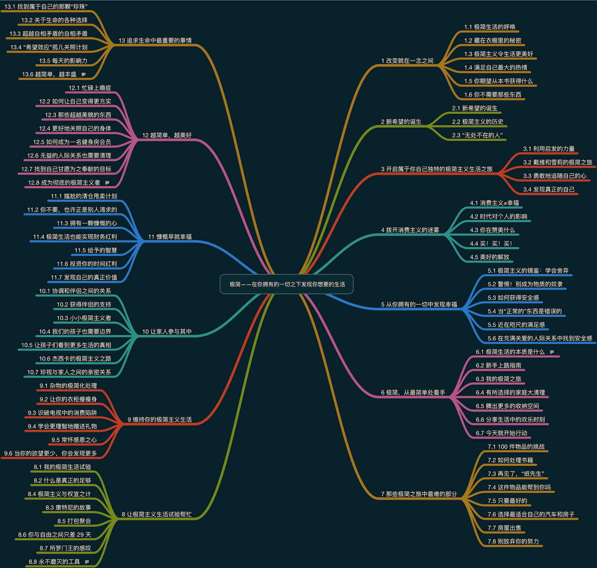

极简
Table of Contents
- author
- 乔舒亚·贝克尔
- read
《极简》–这是一本用惊奇的简单方法改变你的生活的书. 书中告诉了我们「极简主义」是什么、为什么要追求极简、怎么做以及极简主义红利的使用建议.
1. 概念
乔舒亚·贝克尔对极简主义的定义如下:
刻意地倡导对我们最有价值的生活, 并清除那些阻碍我们得到它的东西. (p23)
极简主义的美好, 并不在于它带走了什么, 而在于它所给与我们的东西! (p23)
极简主义真正的重点在于将我们的资源用在对我们来说最有价值的地方. 作者对极简主义的定义并不想大家想象的那样, 舍弃各种物品, 然后在艰苦的环境中生活.
你拥有的越多, 被占有的也就越多. (p4)
拥有过度的物质, 并不能让我们幸福. 更糟糕的是, 它将是我们远离真正让我们幸福的事物. 一旦放弃了那些不重要的事物, 我们就能更自由地追求对我们来说真正重要的东西. (p7)
关于极简主义的两个常见错误认识:
- 极简主义意味着放弃一切! (p25)
- 极简主义就是整理你所拥有的物品. (p26)
2. 极简主义令生活更美好
作者列举了一些奉行极简主义可以获得的回报:
- 更多的时间和精力
- 更多的金钱
- 更为慷慨
- 更多自由
- 更少压力
- 更少焦虑
- 对环境影响更小
- 拥有更高品质的东西
- 为我们的孩子们梳理更好地榜样
- 留给他人的工作量更少
- 更少比较
- 更多满足感
怎么样? 是不是听起来挺有诱惑力的, 当然还有很多其它的益处. 丢弃不需要的东西, 就是我们迈向向往生活的第一步.
3. 发现真正的自己
你会将不需要的东西从自己的生活中清除掉. 当你这么做的时候, 就是在为那些真正重要的事情找到更多的空间. (p45)
把你所拥有的物品卖掉或赠送给穷人, 因为这些东西对你而言是不必要的负担! 它们阻止你去体验那永恒、富足的生命. 拥有更少的东西吧! 你的这些物品正阻碍你成为你真正想成为的人! (p31)
你来到这个世界, 并不是为了去过别人的生活; 你来到这个世界, 是为了活出你自己. (p46)
这个世界充满了各种各样的诱惑, 我们经常会迷失期间. 但当我们奉行极简主义之后, 那些诱惑也同时减少了, 我们更加清楚我们真正需要什么、我们想要追求什么样的生活.
以下是作者提供的用来审视自己的问题, 可以拿张纸, 将你的答案写下来:
- 无论是美好的还是糟糕的, 有哪些经历曾改变了你的生活?
- 在自己最令人瞩目的成就中, 你能发现哪些共性?
- 在这个世界上, 你最想去解决哪些问题?
- 如果金钱不是需要考虑的因素, 什么样的工作最能吸引你?
- 在生活中, 有哪些梦想是你最后悔没有努力追求的?
- 你希望自己能为世界留下的、最永久的遗产是什么?
- 你在生活中最欣赏谁? 这个人有哪些特点你最希望效仿? (p46)
4. 远离消费主义
在购买和拥有物品的时候, 我们中有多少人就像五岁的孩子一样啊–我们只是被某种商品的魅力俘获, 而不考虑一旦拥有了它, 我们是否会在很长的时间里需要或者喜欢它们. (p51)
我之前就经常做类似的事, 买了东西之后, 没用几次就将其丢在某个角落里了. 也接触过「断舍离」的概念, 但是在剁手的时候总是忘记了它. 不过现在我拥有的物品也不是很多了, 衣柜里放着的衣服都是经常穿的, 最近也和一些书做了告别, 将它们送给了朋友. 在物品越来越少的时候, 就会思考添置物品时我是否是真的需要它.
就好像生命的目的就是为了自我满足, 而购买物品是其唯一的实现途径一样. (p54)
你正从不需要的物品中寻找应从其他途径获得的东西. (p76)
我们有时购物, 其实并不是真正想要那件物品, 而是想要通过物品去获得其它东西. 经常讲主次顺序搞反, 结果就是为商家的推销买单.
消费从来无法实现让我们感到满足或者幸福的承诺. (p55)
简单地拒绝消费主义, 并不会带给我们幸福. 心理上的匮乏, 只是一种虚空的状态. 真正重要的是, 我们用什么来填补那个虚空. 拒绝消费主义可以使我们不再受到欺骗, 并有可能让我们找到真正的幸福, 无论每个人对幸福的定义是什么. (p55)
5. 从拥有的一切中发现幸福
欲望总是无穷无尽的, 我们记忆中的大多数幸福时光是和物质之外的其他人或事关联更大的.
- 我们不需要通过购买许多物品找寻安全感, 而应在与其他人充满关爱的关系中去找它;
- 我们不需要通过拥有与别人一样的物品去赢得其他人的接纳, 重新定义一下, 你心里的成功究竟是什么样子;
- 我们不需要通过不断地增加物品来追求满足感, 而应学会欣赏已经拥有的东西, 并将不需要的物品赠与他人, 如此一来, 满足感自然会出现. (p89)
如果你对某种安全感的来源看得太重, 那么, 对其他的心理需求就不会那么关注了. (p81)
只有当我们偏离社会规范的时候, 我们才可能感到尴尬. 但是, 我们对「正常」的理解完全是主观的, 是建立在我们身边的社会团体所定义的衡量标准之上的. (p83)
如果我们不因为自己拥有物品的品质和数量而尴尬, 而因为在追求私欲上花了那么多钱而难堪, 那会怎样呢? (p85)
你买过多的物品, 花过多的金钱, 是因为你想要别人喜欢并接受自己吗? 改变一下你对什么是可被接受的, 以及什么才是「正常」的看法吧! 这会让你从尴尬中解放出来, 并获得充分的自由, 也为这个世界做些积极的改变. (p85)
满足感, 就好像是这样一个目的地–我们每次靠近它, 它就退得更远一点儿. (p86)
那些奉献出自己所有物品的人, 更尊重余下的东西; 那些付出了时间的人, 会更好地利用剩余的时间; 那些捐赠了大量金钱的人, 更会利用他们剩下的钱. (p86)
人们获得安全感、接纳感和满足感的欲望, 几乎是三种普遍性的动机. 我们需要识别, 到底是什么力量驱使我们做出了购买的决定, 因为, 只有在那时, 我们才能摆脱物质主义干扰我们的力量–正是这种力量使我们无法获得真正的安全感、接纳感和满足感. (p88)
6. 极简主义的简单行动指南
以下是作者的朋友对于应该舍弃的东西的定义:
- 「任何不能为他的生命增值」的东西
- 「那些在家里无法闪耀出喜悦光芒」的东西
- 「干扰你过上自己应有生活」的东西 (p101)
你可以参考以上定义, 也可以根据自身情况做出自己的定义.
有时候, 我们必须放弃成为那个人, 才能真正欣赏我们实际能够成为的那个人. (p112)
如果你不确定自己想处理掉某件物品, 可以试着离开那件物品生活一段时间, 然后, 再决定它对你而言是必需的还是多余的. (p138)
常有人问我: 「我要如何区分需要与欲望呢?」我的答案总是如出一辙: 「如果你试着脱离某件东西生活一段时间, 就自然会知道.」 (p158)
作者还讲了许多其他的具体做法和一些人的个人案例, 比如:
- 100 件物品的挑战;
- 「无处不在的人」;
- 打包聚会.
7. 自我之外
我们把每天最美好的时光用于努力获取更多. (p220)
当我们将焦点放在自身的时候, 总想着要获取更多, 然后越来越累.
当你把财富放到了某个地方, 你的心也会跟随之而去. (p212)
从长远角度看, 以自我为中心的快乐, 从来不会让我们感受到那种在服务他人的过程中才能体会到的巨大满足感. (p248)
选择持续地帮助别人, 已经成为提升幸福感的重要方式之一. (p249)
作者提倡将自己多余的部分资源拿出来分享给需要的人, 可以是衣物、书籍、金钱或者时间等等. 跳出自己的世界去关心一下他人的生活, 这会提醒你, 你不是宇宙的中心.
「天国就像是一位寻找好珍珠的商人. 当他找到一枚价值极高的珍珠时, 他卖掉自己的全部财产, 买下了这颗珍珠.」 (p244)
8. 附: 书籍目录 ATTACH
